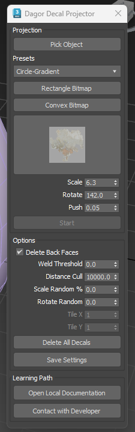
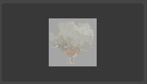
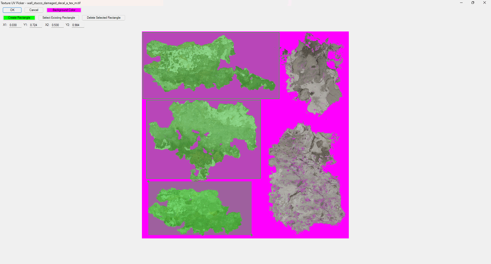
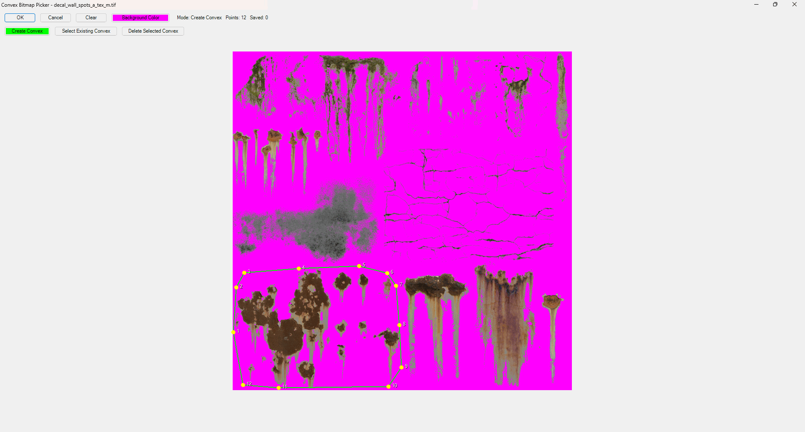

Dagor Decal Projector Tool
Installation
Install the script following the provided instructions.
3ds Max Version Requirement
This script requires 3ds Max 2025 or later.
Overview
Dagor Decal Projector Tool places rectangular and convex decals on a mesh. It can place many decals in one session. The tool uses much memory, so it is a separate script.
First Start
Open GaijinTools > Dagor Decal Projector….
The main window has the controls shown below.


Main Window Controls
Pick Object button selects the mesh where the tool places decals.
Presets drop-down menu selects a test preset. This control is for test use.
Rectangle Bitmap button opens the bitmap picker for a rectangular decal.
Convex Bitmap button opens the bitmap picker for a convex decal.
Open Material Preview button opens the Material Editor for the current decal material.

This field shows the selected decal. It can show a preset or a decal selected with Rectangle Bitmap or Convex Bitmap.
Scale spinner sets the decal size.
Rotate spinner sets the decal rotation around its center.
Push spinner sets the distance between the decal and its parent surface.
Start button starts decal placement. It is active after you select a mesh and a decal.
Delete Back Faces checkbox removes triangles that face away from the current view.
Weld Threshold spinner sets the vertex weld distance. Use it when a decal crosses a Smooth Group boundary.
Distance Cull spinner sets the maximum placement distance from the camera. Use it on complex meshes to limit decal placement depth.
Scale Random % spinner adds random scale changes to placed decals.
Rotate Random spinner adds random rotation changes to placed decals.
Tile X spinner sets the horizontal tile count for Rectangle Bitmap mode.
Tile Y spinner sets the vertical tile count for Rectangle Bitmap mode.
Delete All Decals button removes all scene nodes named
DecalMaster_*anddpLine*.Save Settings button saves settings to an INI file beside the script.
Bitmap Pickers
Both bitmap pickers have these controls:
OK button confirms the selected decal.
Cancel button stops the current action. It selects a rectangle that covers the full texture.
Background Color picker sets the background color for alpha editing.
Convex Bitmap Picker
Clear button removes the current convex decal.
Create Convex button starts convex decal creation.
Select Existing Convex button selects a saved convex decal.
Delete Selected Convex button removes the selected convex decal.
Rectangle Bitmap Picker
Create Rectangle button starts rectangular decal creation.
Select Existing Rectangle button selects a saved rectangular decal.
Delete Selected Rectangle button removes the selected rectangular decal.
The tool saves decals beside the script in JSON files.
Each JSON file has the same base name as its texture.
For example, wall_stucco_damaged_decal_a_tex_m.tif uses
wall_stucco_damaged_decal_a_tex_m.json.
{
"texture": "wall_stucco_damaged_decal_a_tex_m.tif",
"rectangles": [
[0.00309023, 0.00494438, 0.663164, 0.325093],
[0.0216316, 0.331273, 0.57293, 0.709518],
[0.0302843, 0.724351, 0.529666, 0.983931]
],
"convexes": [
[[0.026576, 0.411619], [0.124227, 0.317676], [0.366502, 0.309023], [0.539555, 0.347342], [0.584054, 0.489493], [0.535847, 0.625464], [0.329419, 0.719407], [0.220643, 0.741656], [0.026576, 0.598269]]
]
}
The JSON file stores rectangles and convex shapes separately. Use Delete Selected Convex to remove the selected decal.
Usage Example
For this example, use a decal texture with an alpha channel.
Create a sphere and select it with Pick Object. Use a mesh with fewer triangles if the tool runs slowly.
Choose a decal texture. Click Rectangle Bitmap for a rectangular decal or Convex Bitmap for a convex decal.
In the bitmap picker, create a decal or select an existing one.


In the convex picker, use Select Existing Convex to load a saved decal, Create Convex to make a new decal, or Clear to remove decals from the picker.
Click OK to confirm the decal. With no decal selected, OK and Cancel both create a rectangle that covers the full texture.
Click Start and place decals on the sphere. Hold
Shiftto scale a decal orCtrlto rotate it. Click Start again to stop placement.Select another bitmap and click Start to continue. New decals use a Standard material. Select them in Object Inspector to set another material.


Support
Open Local Documentation button opens this page.
Contact with Developer button opens the developer page.
Tip
If you have questions, contact the author directly at a.vlasov@gaijin.team.